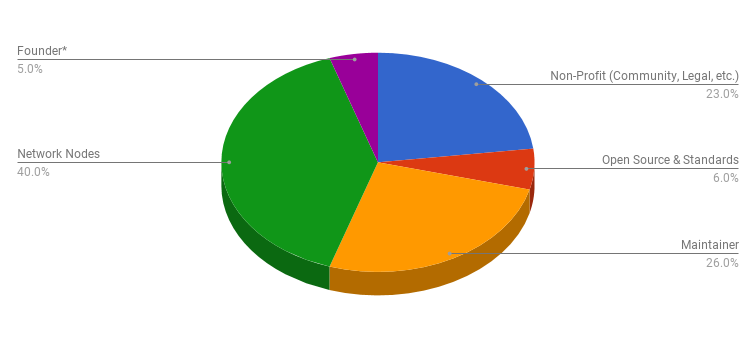

The Veres One Project
The Veres One Project envisions a world where people and organizations control their identifiers and their identity data. The Veres One Blockchain is a fit-for-purpose blockchain optimized for identity on the Web. The network ecosystem is designed to be self-sufficient through the use of an innovative operational and funding model. The operational model ensures openness, prevents attacks against the network, and financially rewards individuals and organizations that choose to run software to ensure the security of the network. Human dignity demands that every individual be able to participate equally in our increasingly digital society. That means everyone deserves the ability create and administer unique, globally resolvable identifiers. For that reason, the network is global and open to the public; anyone may participate.
The Problem
To date, every identifier you use online does not belong to you; it belongs to someone else.
The Internet was not designed with interoperable identity systems in mind. This inevitably forced websites to create their own solutions, which are not interoperable.
When you sign up to a website, you typically create a username and a password. The website asks you for this information so that it can start to associate data with you. The more benevolent use of this data is to customize an experience suited to your needs. This identifier and data, however, are locked away on the site; they are not portable. Even the global identifiers that websites use, such as your email address, are not owned by you. The email address "you@gmail.com" isn’t owned by you, it’s owned by Google. You do not have control over your identifier nor your data.
Since this data is not portable, you must rebuild your identity information -- your identifiers and data -- from scratch on many different websites. Duplicating that information often means sharing more than intended, allowing websites to learn things and infer things about you that you didn’t expect.. It also means that each website accumulates toxic data about you, inviting behavior like spam, financial fraud, data siloing, data warehousing, and identity theft. Initiatives like the European Union’s General Data Protection Regulation (GDPR) only increase the pressure to address these problems.
In addition to risks from the information we explicitly share with websites, there is also a vast amount of identity information already out there, with few mechanisms for managing it. This outside information is often combined with the information we share to create surprisingly detailed profiles, used for everything from ad targeting to site customization to custom pricing (not always for lower prices). The result is a strong economic incentive for large data warehousing companies to store and sell your information, often without your consent.
Vision
Our vision is to enable all people and organizations in the world to
-
create and own their online identifiers, and
-
control their identity data and with whom they share that data.
Achieving this vision will enable a Web where:
-
Our identity information and identifiers are owned and controlled by each of us.
-
We can more strongly prove key attributes about our digital personas, reducing fraud.
-
Data can be bound to identifiers under our control instead of only to websites, or stuck on paper in file cabinets, improving data portability.
-
Privacy can be enhanced by choosing when and with whom our information is shared.
-
Data sharing can be more easily reduced to the minimum required for a given interaction.
This vision is shared among a large community of people working within global organizations such as the Internet Identity Workshop, World Wide Web Consortium, Internet Engineering Task Force, United Nations ID2020, and the Rebooting the Web of Trust project.
Mission
The mission of the Veres One Project is to facilitate the creation of software and provide the ecosystem governance to enable anyone in the world to create and manage their own decentralized identifiers.
Potential applications include, but are not limited to portable credentials for use in education, healthcare, government, trade, finance, and humanitarian efforts. Further information on application sectors can be found in: /sectors/
Solution
To achieve the vision stated above, the communities working on the problem have identified a solution that is composed of three architectural layers:
| Decentralized Identity Management |
| Verifiable Credentials |
| Decentralized Identifiers |
The foundational layer, Decentralized Identifiers, enables Self-Administered Identifiers which means that any device, person, or organization in the world can create and control their own identifiers. Decentralized Identifiers (DIDs) are complementary to the Domain Name System (DNS) that is in widespread use today with one important difference: with DNS you lease your identifiers instead of owning them, whereas with DIDs, you own your identifiers. The second layer, Verifiable Credentials, enables one to store and control one’s digital credentials such as passports, drivers licenses, educational qualifications, professional licenses, and other third-party issued credentials. Finally, the third layer is Decentralized Identity Management, which enables one to control when, under what restrictions, and with whom their identity information, called a Verifiable Profile, is shared via software applications and digital wallets.
With Self-Administered Identifiers, such as DIDs, individuals can establish independent, Verifiable Profiles, comprised of Verifiable Credentials from recognized authorities. For example, combining a subset of a college transcript with a proof of age from the Department of Motor Vehicles to present to a prospective employer, both referring to the same Decentralized Identifier, either directly or indirectly. These Verifiable Profiles can be selectively shared with trusted parties, leveraging Decentralized Identifiers and Verifiable Credentials to give individuals greater control over our online identity.
The goal of the Veres One Project is to be a provider for the most foundational piece of the vision: Decentralized Identifiers.
The Veres One Blockchain is a fit-for-purpose blockchain built specifically for Decentralized Identifiers. This specialization enables the blockchain to be faster, more cost effective, and more privacy enhancing compared to existing blockchains that are being repurposed for identity management. The Veres One Ecosystem is:
-
Public - Anyone in the world may read and audit the entire contents of the ledger.
-
Permissionless - Any person or organization in the world may create and control their identifiers.
-
Leaderless - Blockchain consensus relies on leaderless elector collaboration, not proof of work, to determine when consensus has been finalized. Electors are selected dynamically to allow participants to join and leave the network and to ensure that there is no centralization or single point of failure for the ledger.
-
Based entirely on open standards and open specifications - Broad implementation and interoperability can only be achieved if all aspects of the system are documented and standardized in a non-discriminatory, patent-free and royalty-free manner while ensuring that the creators and maintainers of the system are properly funded.
-
Built on a stakeholder driven governance model - The source code and development team have a strict mission-driven focus that always puts the users of the ledger first.
-
Economically sustainable - The people that create, run, and protect the network are paid by the Veres One Project to do so. Avoiding a "tragedy of the commons" is essential for sound network economics for a global public utility.
-
Non-speculative - Unlike other ledgers, the Veres One Blockchain does not need a speculative network token or cryptocurrency, which eliminates currency speculation, thus ensuring predictable long term operational costs.
How it Works
The Veres One ecosystem consists of a number of roles:
-
The Board of Governors is responsible for governance. This includes ensuring the proper execution of the Veres One Project mission and managing, collecting, and distributing funds according to the funding model.
-
The Maintainer is responsible for maintaining the Veres One software including continuous security review, managing community contributions, correcting software defects, and implementing new features.
-
Nodes are responsible for providing computational and storage resources for the Network. As the system is permissionless, any person or organization may run one or more Nodes.
-
The Network is a collection of Nodes that maintain the decentralized ledger.
-
Entities (people, organizations, and devices) use the Network to create and update decentralized identifiers and their associated metadata.
-
Accelerators enable entities to increase the speed at which Entities can create and update identifiers on the Network.
Entities may use the Veres One Network to create decentralized identifiers via software applications such as digital wallets. There are two mechanisms for creating Decentralized Identifiers on the Network. Both mechanisms require roughly $1 USD to perform, which is derived from the estimated cost of running the Network. Updates to the Decentralized Identifier require roughly $0.25 USD to perform or between 2%-4% of what the Accelerator charges to write a particular type of data to the blockchain, whichever is greater. The first approach is to pay an Accelerator to create a Decentralized Identifier, which happens as quickly as the Network can come to consensus (a few minutes). The second mechanism is to submit a creation request to the Network with an associated proof of work, which typically takes 6-9 hours for a software application to generate. Once the Network verifies the proof of work and comes to consensus, the Decentralized Identifier will be created.
The Veres One Project collects proceeds from Accelerators at agreed upon rates set by the Board of Governors and distributes the funds according to current operational needs. Accelerators fees will be waived on a recurring basis for a fixed number of humanitarian uses, such as providing portable digital credentials to refugees for asylum-seeking purposes. Further information related to Use of Funds is outlined later in this document.
Deployment
The Veres One Blockchain Testnet is available for immediate use with Node and Developer documentation published at https://veres.one/developers/. The live network is slated for a Q1 2018 launch.
Team and Community
Our passion to realize Self-Administered Identity is something we share with a substantial and growing community. There is broad interest and activity from a variety of very capable technologists. The strength of this community is why these efforts will bear fruit.
Digital Bazaar is the Founder, and is the company that created the Veres One Blockchain technology and has been spearheading work on payments, identity, and blockchain for the Web for over 14 years. Manu Sporny, the CEO, and Dave Longley, the CTO, have co-invented numerous technologies like Decentralized Identifiers (DIDs), Verifiable Credentials, Linked Data Signatures, the Web Ledger protocol, JSON-LD, and a variety of other technologies broadly deployed by large multinational organizations such as Google, Microsoft, Yandex, and the BBC. The organization is also under contract to the United States Department of Homeland Security to provide analysis of Blockchain technologies and standardize technologies that produce a competitive marketplace for identity solutions. Self-Administered Identity is one component of Digital Bazaar’s vision for the next generation Web which ensures that every person on the planet has global identities that they control and has access to the global economy.
Blockchain Architecture Services LLC is the initial Maintainer; a new technology company that has been formed for the primary purpose of technological management and development of the Veres One software and network. This organization is responsible for proper security reviews, new features identified as critical to the proper operation of the network, and additional features that are supportive of the Veres One Mission. Blockchain Architecture Services LLC and Digital Bazaar will initially share employees until the Maintainer team is fully staffed. Blockchain Architecture Services LLC reports to the Board of Governors.
The Veres One Project is operated under a non-profit organization (to be announced) and houses the Board of Governors, which is responsible for ensuring the proper execution of the Veres One Mission, selecting the Maintainer, and managing, collecting, and distributing funds according to the funding model to organizations like Spec-Ops, who develop open standards and reference implementations as open source software.
Since 2005, the Internet Identity Workshop (IIW) has been the world’s leading innovation forum for concepts like Self-Administered Identity. A vision holder and catalytic workshop to make real the vision of an identity layer of the Internet that works for people. It continues to gather every six months to move the specifications and implementations of the vision forward.
Rebooting Web of Trust (RWOT) is a community of technologists, cryptographers, philosophers, ethnographers, and other domain experts developing scientific papers, technology, and specifications for Self-Administered Technology. The community has been focused on refining Linked Data Signatures, Verifiable Credentials, and Decentralized Identifiers (DIDs).
The World Wide Web Consortium (W3C) creates the next generation standards for the Web. Employees of Digital Bazaar have been deeply involved in the creation of next generation Web standards over the past two decades. The Veres One Project will always strive to be 100% compliant with the standards the Veres One Blockchain uses and will help create new standards where none exist via the W3C and other pertinent standards organizations.
Fundraising and Use of Funds
The Veres One Blockchain software already exists, which eliminates the need for a Token Pre-Sale, a Simple Agreement for Future Tokens (SAFT), or an Initial Coin Offering (ICO) to develop the network software. In addition, avoiding the burden of tens of millions of dollars or more in investor returns ensures that Veres One can launch with the minimal amount of ecosystem debt in order to drive ecosystem costs down as low as possible. As the network scales, the marginal cost of using the ledger is expected to decrease even further.
The primary use of funds will be to ensure network stability for decades to come. The non-profit Veres One Project, which governs the Veres One Blockchain, will receive the bulk of the funds to pay for continued software development and security reviews, incentivize nodes running the ledger as well as for governance and administrative tasks. All funds allocation, other than for the Founder, will be at the discretion of the Veres One Project. The graph below is a suggested starting point.
Blockchain Architecture Services LLC will have the initial software support contract to maintain and advance the Veres One Blockchain. A significant portion of funding will also be directed to open source, open standards, and incubation efforts that support the development of Self-Administered technology while the rest will be used to ensure global legal compliance and support the growing community.

The Founder is capped at $25M USD per annum in the event that aggregate revenues exceed $500M USD per annum.
Further Reading
This document provides an initial summary of the Veres One Project. Readers that would like to learn more about this initiative may find the following more detailed documentation and specifications useful:
-
Decentralized Identifier Specification - The technical specification for Decentralized Identifiers.
-
Veres One Testnet Website - The Veres One Testnet website used by software developers to test the website.
-
Verifiable Credentials Specification - The technical specification for W3C Verifiable Credentials, which use Decentralized Identifiers and the Veres One Blockchain.
-
An introduction to Self-Administered identity.
-
Rebooting the Web of Trust - The series of workshops that are incubating much of the work that led to the Veres One Blockchain.
Disclaimer
| Summary: The Veres One Project, including its affiliates, are not offering network tokens using a Token Pre-Sale, Simple Agreement for Future Tokens (SAFT), an Initial Coin Offering (ICO), or any other speculative token or cryptocurrency sale mechanism. |
This page is a summary of the current and future developments of the Veres One Blockchain. This page is for information purposes only.
The information set forth in this page is not exhaustive and does not imply any elements of a contractual relationship. The content of this page is not binding for Blockchain Architecture Services LLC ("Company" ) and its affiliates and Company reserves the right to change, translate, modify, add, or remove portions of this page for any reason at any time before, during and after the publication of this document by posting the amended page at the following location: /summary/
Unless expressly specified otherwise, the products, services and innovations detailed in this document are currently under development and are not currently deployed. The creators of this page and all persons associated with the preparation and/or publication of this page each disclaim to the fullest extent permitted by law any and all warranties implied by law.
Nothing in this page shall be deemed to constitute a prospectus of any sort or a solicitation for investment, nor does it in any way pertain to an offering or a solicitation of an offer to buy any securities in any jurisdiction.